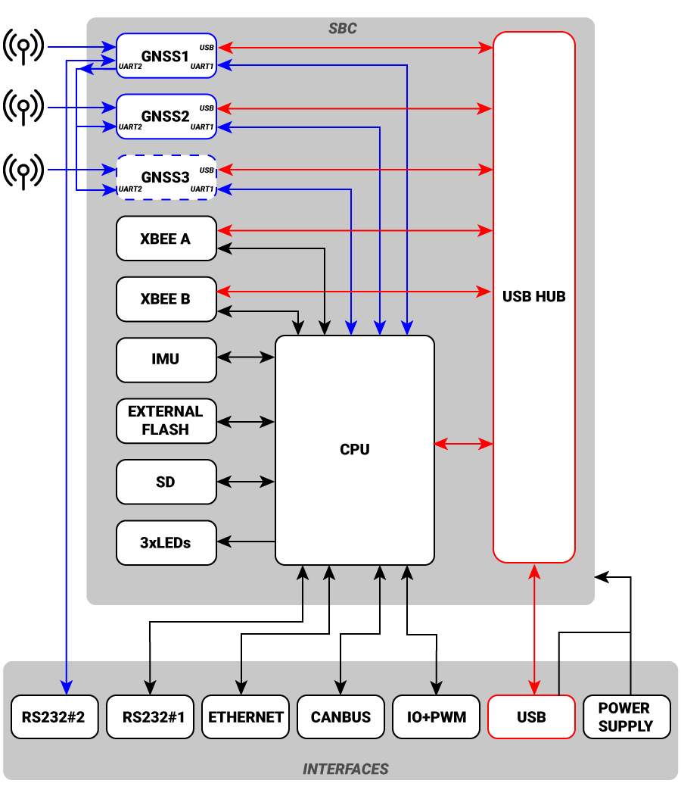

Internal Architecture#
The SBC is a modular, versatile embedded controller with built-in support for GNSS, cellular, wireless, and industrial I/O. Its USB-centric design, flexible signal routing, and multiple serial interfaces make it ideal for real-time applications involving positioning, communication, and control.
This section describes the SBC’s internal architecture and how its components interact. The diagram below shows the system layout, including onboard modules, communication buses, and external interfaces.

Microcontroller STM32#
At the core of the SBC is an STM32 microcontroller, which manages all peripherals, communication interfaces, and application logic. It directly interfaces with onboard modules and external connectors.
GNSS Receivers#
Each SBC includes at least one GNSS receiver (GNSS1), with optional support for GNSS2 and GNSS3. Each receiver provides both UART and USB connectivity.
UART 1 connects directly to the STM32 for internal data handling.
UART 2 links GNSS receivers together and enables direct data streaming.
USB lines are routed through the onboard USB Hub, making the receivers accessible as USB devices to a host system.
Tip
RS232 #2 is always connected to GNSS1’s UART 2, offering a direct serial output for GNSS data.
XBEE Sockets#
Both XBEE A and XBEE B can interface with the CPU via UART and route through the USB Hub.
Inertial Measurement Unit#
An onboard IMU communicates with the CPU over I²C, enabling orientation and motion sensing.
Storage#
Two storage options are available:
External Flash: Non-volatile memory accessed directly by the CPU and exposed as mass storage device.
microSD Slot: Removable storage that can also be exposed over USB as a mass storage device.
Communications#
The SBC exposes several interfaces for external communication:
RS232 #1: Connected to the CPU, configurable via firmware (up to 250 kbps).
RS232 #2: Permanently wired to GNSS1 UART2 for direct GNSS output.
Ethernet: Direct CPU connection for LAN/Internet access.
CAN Bus: The CPU acts as a CAN node; an onboard termination resistor can be enabled via jumper.
USB Type-C: Serves as both power input and data connection, routed through a USB Hub to multiple devices.